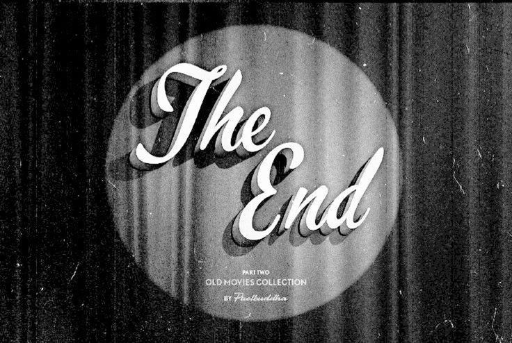

O seu novo portal de cinema finalmente está no ar. Este é o nosso primeiro post e estamos muito felizes em receber você por aqui. Criamos este espaço para os apaixonados por sétima arte. Se você não perde um lançamento, ama debater teorias ou vive caçando clássicos escondidos, este é o seu lugar.